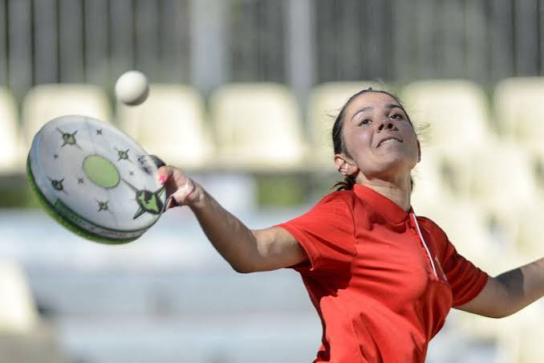

Tambourin
jeu de balle
languedocienUn sport de village devenu patrimoine vivant


⟹ Musique ⟸
Le jeu de balle au tambourin, appelé aussi tambornet en occitan, appartient à la grande famille européenne des jeux de paume et de renvoi. Sa forme languedocienne se développe au XIXe siècle à partir du jeu de ballon au brassard, très présent dans les villages de l'Hérault. Entre les années 1860 et 1900, le tambourin devient progressivement l'instrument de frappe privilégié et les parties se multiplient sur les places publiques, notamment lors des fêtes et des défis entre villages.

Le premier grand concours de Pézenas est créé en 1909. L'entre-deux-guerres voit se structurer clubs et championnats, mais la pratique traverse ensuite une période de déclin. L'écrivain occitan Max Rouquette, lui-même joueur et ardent défenseur de cette culture, joue un rôle décisif dans sa renaissance à la fin des années 1930 en fédérant les sociétés héraultaises.
Un tournant majeur intervient en 1954, lorsque les responsables français et italiens rapprochent leurs règlements. La pratique moderne adopte alors un jeu ouvert commun avec la palla tamburello italienne. Cette normalisation permet les rencontres internationales et installe durablement le tambourin parmi les sports traditionnels organisés.
Dans les villages du Languedoc, le terrain de tambourin est longtemps resté autant une place de sociabilité qu'une aire sportive.
— Synthèse d'après la Fédération française et l'Inventaire du patrimoine culturel immatérielEn extérieur, deux équipes s'affrontent sur un long terrain rectangulaire séparé par une ligne médiane, sans filet. Selon les formes de pratique, elles comptent de trois à cinq joueurs. Le principe est celui d'un jeu de frappe et de renvoi : envoyer la balle dans le camp adverse de manière à empêcher son retour régulier.
Le tambourin est une raquette circulaire dont la forme rappelle l'instrument de percussion qui lui a donné son nom. Historiquement recouvert de peau animale, il est aujourd'hui fabriqué avec des matériaux modernes plus réguliers et plus résistants. Le battoir, cercle plus petit fixé à un long manche souple, a longtemps servi à l'engagement et demeure emblématique de l'iconographie de ce sport.
Puissance, placement, lecture du vent, réflexes et endurance structurent le jeu. Sa spectaculaire vitesse de balle contraste avec l'apparente simplicité du terrain. Cette combinaison explique sa forte dimension de spectacle lors des rencontres estivales.
Le jeu de balle au tambourin figure à l'Inventaire du patrimoine culturel immatériel en France. Cette reconnaissance souligne qu'il ne s'agit pas seulement d'une discipline sportive : il porte des savoir-faire, un vocabulaire, des gestes, une mémoire locale et des formes de sociabilité transmises entre générations.
Clubs, écoles, ligues et fédération assurent aujourd'hui la transmission sportive. Des actions de découverte, des compétitions départementales, régionales, nationales et européennes, ainsi que la pratique en salle, ont élargi son audience au-delà de son berceau languedocien.
À Gignac, la tambourithèque conserve affiches, anciens instruments et témoignages matériels. Elle donne à voir l'évolution du tambourin et la continuité d'un patrimoine vivant dont l'Hérault demeure le principal foyer français.
Le nom occitan tambornet rappelle l'inscription du jeu dans la culture d'oc. Max Rouquette, grande figure de la littérature occitane du XXe siècle, a contribué à sauver et à structurer cette pratique au moment où elle risquait de disparaître.
Le tambourin condense ainsi plusieurs dimensions de l'identité languedocienne : goût du défi collectif, importance de la place publique, attachement au village, culture associative et continuité entre loisir, fête et compétition.
Dans une rubrique consacrée aux expressions musicales et festives, il trouve sa place par proximité culturelle avec les fêtes de village, les défilés et les répertoires populaires qui entourent traditionnellement les rencontres. Il reste toutefois, dans sa nature propre, un jeu sportif de balle et non un instrument musical.
Le tambornet bénéficie d’une documentation patrimoniale particulièrement riche. La fiche de l’Inventaire du patrimoine culturel immatériel retrace le passage du jeu de ballon au brassard au tambourin moderne, la crise des années 1930, la renaissance fédérale portée par Max Rouquette et le rapprochement franco-italien de 1954. Occitanica complète cette approche par des dossiers sur l’histoire, les règles, le lexique occitan et la transmission.
Quelques repères peuvent être précisés : une première fédération est déclarée dans les années 1920 mais ne se maintient pas ; Max Rouquette relance l’organisation à la fin des années 1930 ; la Coupe du Languedoc, future Coupe de France, apparaît en 1949 et le championnat de France est officialisé en 1952. En 1954, la rencontre avec le tamburello italien conduit à l’unification d’une partie des règles et ouvre une nouvelle phase internationale.
La pratique extérieure de référence oppose traditionnellement deux équipes de cinq joueurs sur un terrain d’environ 80 × 20 mètres, séparé au sol par une ligne médiane appelée la « basse ». Le vocabulaire technique et l’implantation villageoise donnent au jeu une forte dimension culturelle en plus de son organisation sportive.
Bibliographie indicative : Max Rouquette, Le jeu de la balle au Tambourin, 1948 ; Max Rouquette, Le Livre du Tambourin, CRDP Montpellier, 1986 ; Charles Camberoque, Le jeu de la Balle au Tambourin, Bibliothèque 42, 1998 ; Christian Guiraud, « L’histoire singulière d’un sport de “tradition” régionale : le tambourin », Études héraultaises, 2010.